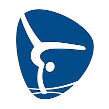
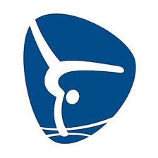

A ginástica artística, também conhecida no Brasil como ginástica olímpica, é uma das modalidades da ginástica. Por definição, de acordo com o Novo Dicionário Aurélio da Língua Portuguesa, a palavra vem do grego gymnastiké e significa - "A Arte ou ato de exercitar o corpo para fortificá-lo e dar-lhe agilidade. O conjunto de exercícios corporais sistematizados, para este fim, realizados no solo ou com auxílio de aparelhos são aplicados com objetivos educativos, competitivos, terapêuticos, etc."
Historicamente, enquanto forma de prática física, a ginástica surgiu na Pré-História. Contudo, veio a se tornar uma modalidade esportiva apenas em 1881, em escolas alemãs tipicamente masculinas. Desse modo, a ginástica artística sagrou-se como a forma mais antiga do desporto e em decorrência disto, sua história é constantemente confundida com a da ginástica em si, o que não fere sua evolução artística individual posterior. Mais tarde, em 1896, até então praticada somente por homens, passou a ser um esporte olímpico, e em 1928 as mulheres puderam participar nos seus primeiros Jogos. No ano de 1950, a ginástica passou a ser praticada – nos aparelhos – da forma como se conhece hoje. Apesar de despontar para o mundo como um esporte inicialmente masculino, a ginástica tornou-se uma prática mais ativa entre as mulheres. Em decorrência disso, os eventos artísticos femininos tornaram-se mais disputados, admirados e destacados entre todas as modalidades do esporte.
As apresentações da ginástica artística são individuais - ainda que nas disputas por equipes -, possuem o tempo aproximado de trinta a noventa segundos de duração, são realizadas em diferentes aparelhos - sob um conjunto de exercícios - e separadas em competições femininas e masculinas.
Os movimentos dos ginastas devem ser sempre elegantes e demonstrarem força, agilidade, flexibilidade, coordenação, equilíbrio e controle do corpo.
História e evolução
A ginástica, enquanto prática do exercício físico veio da Pré-história, afirmou-se na Antiguidade, estacionou na Idade Média, fundamentou-se na Idade Moderna e sistematizou-se nos primórdios da Idade Contemporânea.
A ginástica artística, enquanto atividade, teria surgido segundo estudos, na Grécia Antiga, como forma de atividade física atlética, e no Egito Antigo, onde as pessoas realizavam acrobacias circenses nas ruas com o intuito de entreter os transeuntes. Como a prática constante desenvolvia habilidades corporais importantes, como a força e a elasticidade, ela passou a ser adaptada ao treinamento militar. O mesmo uso fora feito na Grécia Antiga - onde a ginástica continuou a desenvolver-se. Contudo, em Roma, o apreço pela modalidade artística enquanto treinamento caiu em desuso, e a ginástica passou a restringir-se apenas a apresentações de circo que inspiravam os soldados antes das batalhas, enquanto estes davam à ginástica outros valores em termos de preparação militar.
Seu ressurgimento na Era Moderna fora, como no princípio, ligado à arte. A forma gímnica que chegou a Europa começou com o trampolim, tendo suas primeiras atividades descritas por Archange Tuccaro, no livro Trois dialogues du Sr. Archange Tuccaro, no século XV, ao oeste europeu. Na época do Renascimento, os principais artistas faziam culto ao corpo humano e às suas formas. Assim, a prática da ginástica nas escolas tornou-se constante, e cada dia mais a modalidade ganhava espaço entre os homens.
Jean-Jacques Rousseau, em meados de 1700, publicou um misto de educação e treinamento físico para as crianças, chamado Émile; ou, de l’éducation, que modificou os padrões e sistematizou uma nova aplicação, incluindo a prática da ginástica. Inspirado na reforma, Johann Christoph Friedrich Guts Muths (1776 - 1838), implementou a ginástica natural – composta por exercícios aeróbicos, voltada ao benefício corporal – e a artificial – voltada para a beleza, como a variedade de montes e desmontes do cavalo.
Contudo, seu surgimento oficial[8] só veio a acontecer em 1811, quando o professor Friedrich Ludwig Jahn (1778 - 1852) fundou em Berlim, na Alemanha, o primeiro clube voltado apenas à prática da ginástica.[12] Inspirado pelo espírito patriota advindo de seu pai e pelos escritos de Muths – também conhecido pai da ginástica pedagógica e autor do livro Gimnastik fur die Jugend (1793) - Jahn inspirou jovens da cidade em prol do orgulho de uma revanche contra as tropas de Napoleão (em 1813, pela libertação prussiana e posterior unificação alemã), fornecendo-lhes o ideal histórico e o senso das antigas tradições da nação, através da prática da sistematizada ginástica. Além disso, este educador ainda criou regras específicas, aparelhos diferentes e um sistema de exercícios físicos chamado Die Deutsche Turnkunst (em português: a arte gímnica), ainda hoje considerado matriz na ginástica artística praticada. Durante esta mesma época, na Suécia, Pehr Henrik Ling (1776 - 1839) introduziu um tipo diferente de ginástica. Seu sistema, baseado no exercício coletivo, aspirava desenvolver um ritmo perfeito do movimento. Assim como a ginástica de Jahn, os métodos de Ling também foram adotados para o treinamento militar. Junto a essas escolas, nasceram os Clubes de Ginástica Internacionais. Gradualmente estes clubes estabeleceram associações nacionais para controlar os treinamentos e as competições.
Desse modo, não tardou para que a Federação Internacional de Ginástica (FIG) - uma das entidades esportivas mais antigas do mundo - fosse fundada em 1891. Cinco anos depois, a modalidade fora incluída no programa dos primeiros Jogos Olímpicos modernos, realizados em Atenas, na Grécia. Por razões da origem do nome, a entrada das mulheres nas competições, só se deu na edição de 1928 das Olimpíadas, que aconteceu em Amsterdã, na Holanda. O referido nome incluía a prática nua por parte dos ginastas. Por esta razão, os homens, nos primeiros Jogos, competiam despidos da cintura para cima. Com a providência de vestirem-se por completo, as mulheres puderam estrear nos campeonatos.
A partir daí, a evolução da ginástica enquanto desporto, deu-se ao longo de poucos anos e 1950 foi um momento em particular: as mulheres competiram em alguns aparelhos masculinos - como as argolas - e a ginástica rítmica ainda fazia parte das apresentações artísticas. Pouco antes e em seguida,[15] algumas provas foram acrescentadas e outras retiradas. Os aparelhos foram definidos para cada evento. E por fim, seu aprimoramento não para e a cada revisão das regras, a dificuldade e a beleza dos movimentos aumenta. Atualmente, a ginástica artística é um dos mais populares esportes - não apenas nos Jogos Olímpicos - e um dos mais exigentes para com seus atletas e praticantes. Baseada nessa rápida evolução e popularização, principalmente entre as mulheres, a modalidade artística tornou-se a rainha da FIG entre as demais práticas da ginástica. Surgida como um esporte tipicamente masculino, a modalidade artística globalizou-se como um desporto feminino, que hoje possui maior destaque, um maior número de praticantes e atletas mundialmente reconhecidas.
Movimentos
São abundantes os movimentos que podem ser realizados pelo atleta durante suas apresentações na ginástica artística. A variação se dá tanto no solo, quanto nos demais aparelhos. No entanto, tais movimentos possuem apenas duas variantes: longitudinal - girar em volta de si mesmo - as piruetas; e transversal - de movimento, o mortais. Baseado nisso, seus elementos foram chamados de técnicos, em vista dos intensos treinamentos para se atingir a perfeição da execução dos elementos ginásticos[b] e acrobáticos. Abaixo seguem alguns dos mais conhecidos movimentos e suas descrições de realização. Movimentos não especificados com localização de realização são utilizados em vários momentos. Os saltos e tomadas de equilíbrio (como as paradas de mãos), por exemplo, são de uso de praticamente todos os aparelhos, tanto masculinos quanto femininos:
Abertura: Ação muscular de extensão da articulação dos quadris e pernas.
Avião: Posição de equilíbrio típica da trave, em que o ginasta mantém uma perna no chão e eleva a outra para trás, com os braços abertos. Exige força, flexibilidade e equilíbrio.
Carpada: As pernas estendidas formam um ângulo com o tronco. É possível também ter uma posição carpada de pernas afastadas.
Diamidov: Movimento típico das barras paralelas, o ginasta segura com uma mão uma das barras, e gira em torno do próprio corpo.
Dos Santos (Duplo Twist Carpado): Dois giros em torno do corpo, seguido de dois mortais no ar com uma flexão no quadril levando as mãos à altura do joelho.
Empunhaduras: São tomadas, pegadas ou presas, que representam várias maneiras do executante segurar o aparelho e manter-se nele.
Estendida: O corpo deve estar em linha reta, sem nenhum ângulo.
Flic-Flac: Movimento preparatório para acrobacias. O ginasta levanta os braços esticados ao mesmo tempo em que seus pés deixam o solo, usando um grande impulso dos ombros. Pode ser executado para frente ou para trás.
Giro de quadris para trás (oitava de apoio para apoio): O corpo executa um giro completo em torno do eixo transversal. Movimento típico das barras assimétricas.
Giro gigante: Elemento específico das barras assimétricas. Uma rotatória em volta da barra de 360º, executada com todo o corpo na posição estendida.
Grupada: Todas as partes do corpo se flexionam e se aproximam de ponto central corporal. As pernas devem estar flexionadas e a testa deve tocar o joelho.
Parada de mãos: Exercício mais básico da ginástica artística. O corpo deve permanecer na linha do pulso. Dedos afastados permitem melhor equilíbrio.
Parafuso: Uma rotação (em torno do próprio corpo para os lados) sem o uso das mãos no solo.
Roda: É a chamada estrela. O ginasta passa lateralmente em apoio invertido (de ponta cabeça) e retoma de pé.
Rondada: Semelhante à Roda, com os dois pés chegando ao solo no mesmo instante. Usada pelos ginastas para acelerar uma "passada" de movimento pontuado.
Rudi: Um parafuso e meio na posição estendida após o movimento para frente. Exemplo: flic-flac para frente, mortal simples para frente.
Salto pak: Típico das barras assimétricas. É usado para passar da barra mais baixa para a mais alta. A ginasta faz um movimento semelhante com o flic-flac, pois o salto pak é também um movimento preparatório pontuado.
Selada: Corpo forma um arco e as costas ficam "arqueadas" para trás.
Stützkehre: Movimento típico das barras paralelas. Parada de mãos; Pequena projeção dos ombros à frente e as pernas descem mantendo o corpo todo firme; Passagem pelo apoio normal - As pernas devem, agora, ser chutadas para frente e para cima; O braço de apoio conduz o corpo, dando direção e altura; Queda no apoio invertido, seguido de nova parada de mãos.
Tkachev: Movimento usado nas barras assimétricas e na barra fixa. O ginasta larga a barra, passa de costas por cima dela na posição carpada ou com pernas separadas, e em seguida, pega a barra novamente.
Tsukahara: Salto mortal duplo com um parafuso completo no primeiro salto.
 
